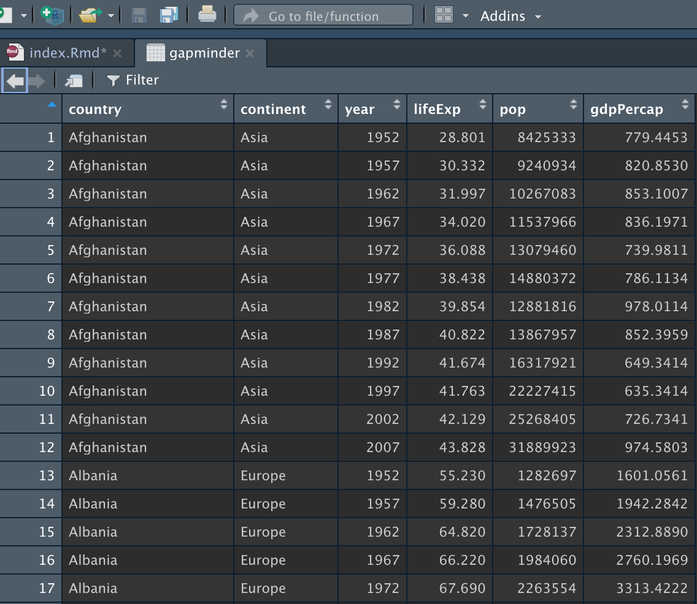

ggplot() 函数对任何数据科学家都是必不可少的, ta是一种非常简单的绘图函数。刚开始接触可能看起来很难， 不过不要害怕，因为一旦学了基础知识，一切都会变得清晰！ 让我们开始！
ggplotly函数可以直接创建动态交互图标， 该函数内置于ggplot()中。 今天我们要绘制动态散点图
准备
导入本文要用到的包
library(tidyverse)
library(gapminder) #准备数据
library(MetBrewer) #配色包
library(plotly) #动态图quick-start
只要会ggplot，只增多一行代码即可绘制出动态图。鼠标悬浮处会显示一个黑色弹出框。
library(plotly)
library(dplyr)
library(gapminder)
#选出2007年的数据
gapminder_2007 <- gapminder %>%
filter(year=="2007") %>%
dplyr::select(-year)
p <- ggplot(data = gapminder_2007,
mapping = aes(x=gdpPercap,
y=lifeExp,
size = pop)) +
geom_point(alpha=0.7)
#将静态图转为动态图
ggplotly(p)画布gglot
用ggplot函数构造一个画布, 使用gapminder数据集

- 将gdpPercap设定为x轴
- 将lifeExp设定为y轴
ggplot(data = gapminder_2007,
mapping = aes(x = gdpPercap,
y = lifeExp))
现在我们将开始添加高层次的图层，会显示越来越多的信息。
添加geom
现在添加geom层，该层是通过 + 构建在ggplot层之上。这里使用 geom_ponit() 绘制散点图，
ggplot(data = gapminder_2007,
mapping = aes(x = gdpPercap,
y = lifeExp))+
geom_point() #透明度
生成的图仅仅是黑白图，为了美观，可以设置为更靓丽的颜色。
aes(color)
二维空间显示三维信息， - x轴 gdpPercap - y轴 lifeExp - color continent
ggplot(data = gapminder_2007,
mapping = aes(x = gdpPercap, #gdp
y = lifeExp, #预期寿命
color=continent))+ #大陆
geom_point() 
现在可以清晰地看出哪些大陆更加富裕、更加健康, 要是配色再好看点就好了。
调整配色
在 [https://textdata.cn/blog/2022-09-04-r-ggplot2-histogram/]中首次使用了MetBrewer配色包。
这里会用5个具有区分度的颜色，我们选择 Lakota 配色方案。同时，在图中绘制对应的人口规模，以size方式显示。
ggplot(data = gapminder_2007,
mapping = aes(x = gdpPercap, #gdp
y = lifeExp, #预期寿命
size = pop, #人口
color=continent))+ #大陆
geom_point()+
scale_color_manual(values=met.brewer("Lakota", 5))
为了让数据更加平滑，对x轴取对数
ggplot(data = gapminder_2007,
mapping = aes(x = gdpPercap, #gdp
y = lifeExp, #预期寿命
size = pop, #人口
color=continent))+ #大陆
geom_point()+
scale_color_manual(values = met.brewer("Lakota", 5))+
scale_x_log10(breaks = c(400, 4000, 40000))
更换主题
使用 theme_bw 更改绘图的主题风格
ggplot(data = gapminder_2007,
mapping = aes(x = gdpPercap, #gdp
y = lifeExp, #预期寿命
size = pop, #人口
color=continent))+ #大陆
geom_point()+
scale_color_manual(values = met.brewer("Lakota", 5))+
scale_x_log10(breaks = c(400, 4000, 40000))+
theme_bw()
标签labs
p2 <- ggplot(data = gapminder_2007,
mapping = aes(x = gdpPercap, #gdp
y = lifeExp, #预期寿命
size = pop, #人口
color=continent, #大陆
text = country))+ #国家
geom_point()+ #透明度
scale_color_manual(values = met.brewer("Lakota", 5))+
scale_x_log10(breaks = c(400, 4000, 40000))+
theme_bw()+
labs(title = "Gdp and Life Expectancy in 142 countries",
subtitle = "Most of Africa is sick and poor,\nwhile Europe is thriving and rich",
x = "Gdp Per Capita",
y = "Life Expectancy",
fill = "Continent",
size = "Population")
p2
使用ggplotly将p2从静态图转为动态图， 鼠标悬浮处弹出圆圈对应的国家。
ggplotly(p2, tooltip = "text")